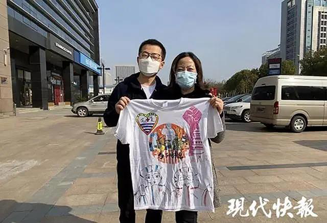
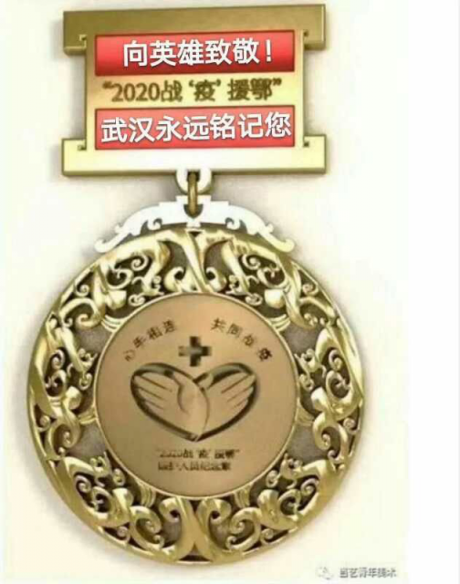
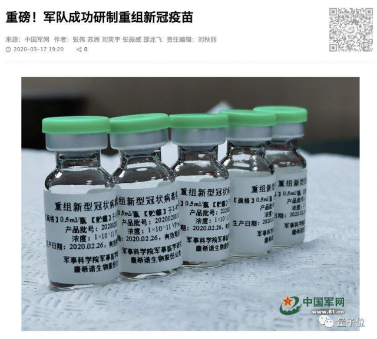

美欧加速撒钱抗疫
原文链接 备份链接 从股市的表现来看，市场更倾向于认同用短期的不便和经济痛苦来换取对病毒的控制 文 |《财经》特派记者 金焱 发自华盛顿 编辑 | 苏琦 新冠肺炎疫情持续肆虐，美国和欧洲为应对疫情影响经济，纷纷出台各种刺激救助政策，试图 …
叶青武汉日记：为武汉拼过命的49队3787人撤离
 5329
5329
来源：正和岛
作者：叶青
03-18正在打榜，当前第1

[
钛媒体

北京灵动新程信息科技有限公司 媒体
](https://archive.ph/o/yDCN8/mp.zhisland.com/wmp/user/personal/other/home?uid=6564053002477371395)
推荐人

1、仍然有隐患
17日，周二，晴17日，全国大陆地区新增确诊病例13例，新增死亡病例11例（湖北11例），新增疑似病例21例。截至17日，全国大陆现有确诊病例8056例（其中重症病例2622例），累计治愈出院病例69601例，累计死亡病例3237例，累计报告确诊病例80894例，现有疑似病例119例。湖北新增确诊病例1例（武汉1例），新增治愈出院病例896例（武汉812例），新增死亡病例11例（武汉10例），现有确诊病例7795例（武汉7483例），其中重症病例2580例（武汉2514例）。累计治愈出院病例56883例（武汉40032例），累计死亡病例3122例（武汉2490例），累计确诊病例67800例（武汉50005例）。新增疑似病例0例（武汉0例），现有疑似病例0例（武汉0例）。3月13-16日，武汉连续四天均有新增确诊病例来自于门诊。专家称，在武汉封城、社区封闭、形势趋缓的情况下还有门诊新增病例，这是个危险信号。“如果这几天的新增病例是来自隔离点的疑似病例，或是境外输入病例，说明我们的疫情已经得到了非常有效的控制，待这些遗留病例清零后，小区也可以慢慢解封了”。武昌方舱医院医疗队医生说，“但如果连续出现小区新发病人，说明防控还有一定漏洞！”“如果是社区监管不严，也不是最可怕的，目前我们最担心的是会存在未被排查到的病源，而这将会是新冠肺炎死灰复燃的漏洞所在”。值得警惕。17日，新增报告境外输入确诊病例12例（广东5例，北京3例，上海3例，四川1例）。截至17日，累计报告境外输入确诊病例155例。累计收到港澳台地区通报确诊病例257例：香港特别行政区167例（出院92例，死亡4例），澳门特别行政区13例（出院10例），台湾地区77例（出院22例，死亡1例）。台湾流行疫情指挥中心17日宣布，岛内新增10例新冠肺炎确诊病例，都为境外输入，其中6人为土耳其旅行团群聚感染。截至欧洲中部时间17日下午16时(北京时间17日夜间23时)的实时统计数据显示，全球新冠肺炎确诊病例逾18万例，其中中国以外确诊病例102969例。
2、凯旋的勇士
17日，在武汉期间支援当地14所方舱医院、7所定点医院的首批49支医疗队共计3787人（其中中医队伍9支，325人）开始返程。17日15时许，“休舱”后的东西湖（武汉客厅）方舱医院舱外广场上，一辆辆白色国家紧急医学救援设备车依次排开，来自上海、天津、重庆、新疆、广东、江西等地的医疗队整装列队，扬起队旗，准备出发。
“敬礼”，正门两侧，每当有医疗队员和车辆驶出，列队的民警均向返程的医疗队员敬礼致谢，目送对方离开。

看着这张照片3秒钟，你一定会流泪。50多天的拼死相救。武汉人民感谢你们。
天河国际机场为返程的援鄂医疗队队员精心准备了5万张“限量版”纪念登机牌。

“亲爱的海南人民，你们借给我们的这100个孩子，一个不少全部健康地还给你们！我爱你们！”17日，被医护人员亲切称为“兰姐”的江汉区工商联副主席王玉兰，在她的朋友圈写下这段文字。这一天，100名来自海南第五人民医院、海南省妇幼等十家医院的白衣天使圆满完成援鄂任务，集结撤队启程回家。
这100个白衣天使给了“兰姐”100个拥抱，这100个拥抱就是100个故事……

“兰姐”给武汉的干部队伍添光增彩。这样的“兰姐”不提拔，提拔谁呢？医疗队员们也激动不已。即将返程的海南医疗队队员王雪莲面对欢送队伍潸然泪下。从驻地前往机场途中，民警向车辆敬礼，目送大家离开，回想在武汉一个多月的点点滴滴，有苦、有累，但更多的是感动。“都说武汉的樱花美，但我认为武汉人感恩、热情的心更美。”第一次来武汉的她，从未想过会受到当地民众如此厚待。江苏援鄂医疗队队员还给江夏区第一人民医院的医护人员赠送了特别的礼物——“与子同袍”文化衫。都是由江苏队员们亲手涂鸦，希望赠送给他们所支援的江夏区第一人民医院的战友们，为他们添衣。现场还发现“母子”一对，母亲是江夏区第一人民医院感染科护士长倪宝红。儿子是江苏援武汉医疗队队员，无锡江南大学附属医院重症医学科90后护师程浩然。两人在同一病区工作了近50天，感情非常深厚。倪宝红说，自己第一眼见到程浩然，就觉得他长得和自己的儿子很像。程浩然也亲切地叫倪宝红“倪妈妈”。

在疫情发生后，京东物流依托布局完善的物流基础设施、大数据备货能力，一线人员坚守阵地，积极保障抗疫物资运送，满足湖北居民的日常生活需求。1月20日至3月初，京东物流累计将来自全国的超过7000吨医疗应急物资和生活物资送至湖北。从13日起，京东快递免费为援鄂医疗队寄送行李，让天使们平安轻松而归！17日上午，湖南省人民医院、湖南省妇幼保健院、湖南省医药学院与黄冈市中心医院、黄冈市妇幼保健院签订结对交流合作协议。湖南省对口支援黄冈市疫情防控前方指挥部指挥长高纪平要求，湖南省3家医疗单位要实打实地传授真本事、传承好作风，指导好联系点在最短时间内开展更多医疗服务，提高医疗水平；要发挥教学方面专长，提高教学、科研水平，在妇幼保健、临床医疗方面加强业务指导，真正让黄冈市中心医院、黄冈市妇幼保健院在护佑人民群众健康中发挥更大作用。
不是援助任务完成就结束了，而是会长期帮助老区人民。感谢。

这是湖北省委省政府赠送给援鄂医务人员的纪念章。今后凭此章来鄂的医务人员及家人，到全省所有景点免费观光旅游。
3、无疫情小区占78.9%
截止17日，武汉市无疫情小区累计数5607个，占比78.9%；无疫情社区累计数556个，占比39.5%；无疫情村（大队）累计数1844个，占比94.9%。其中，最后一句话很重要：当一个城区内所有街道（乡镇）均为无疫情街道（乡镇），该城区经申报评审，命名为无疫情城区。如出现新增确诊病例等情形，视情取消或暂停无疫情命名。大家都要努力。
4、疫苗有希望了
17日，官方重磅宣布，军事科学院军事医学研究院陈薇院士领衔的科研团队，成功研制出重组新冠疫苗，并于16日获批展开临床试验。

这是国内第一个进入临床试验的新冠疫苗，受试者招募已经同步展开。而项目领衔者，是陈薇院士。她不仅在非典抗疫中立下功勋，而且2014年还曾赴非抗击埃博拉，是《战狼2》中陈博士的原型。如此消息引发了巨大关注——微博相关话题阅读达到5.2亿，讨论12.7万。17日的国务院联防联控机制新闻发布会上，中国工程院院士王军志介绍，我国选择了5条技术路线进行新冠疫苗的紧急研制。什么是5条路线？——灭活疫苗。——基因工程重组亚单位疫苗。——腺病毒载体疫苗。——减毒流感病毒载体疫苗。——核酸疫苗。疫苗的原理，就是将病原体通过灭活或者减毒等方法处理后，让人体针对这种病原体产生抗体，以后就再也不怕正牌病原体入侵了。这是一劳永逸的事情。自1月26日抵达武汉以来，陈薇院士团队联合地方优势企业，在埃博拉疫苗成功研发的经验基础上，争分夺秒开展重组新型冠状病毒疫苗的药学、药效学、药理毒理等研究，快速完成了新冠疫苗设计、重组毒种构建和GMP条件下生产制备，以及第三方疫苗安全性、有效性评价和质量复核。过去，我们会说感谢钟南山、李兰娟、张伯礼、王辰院士，现在要加上一位。昨天晚上直播讲课时，我提到“孔子学院+李时珍医院”一起走出去的模式。今天就有网民给我回话：孔子学院旁边建李时珍中医学院，我们蕲春县李时珍医药集团已经在着手布局了，英雄所见略同哈！相信这次的事情有利于这个项目尽快的落地、实施、推广。科技部说：中国向世界公开新冠肺炎诊疗方案及药物筛选结果，法匹拉韦、恢复期血浆、中药等重点药物已向发生疫情的相关国家提供。
5、湖北也有阻击境外的任务
武汉从17日零时起，对境外来鄂人员中确诊病例（含无症状感染者）、疑似病例、不能排除感染可能的发热患者、密切接触者四类人员，一律按防控规定就地进行分类处置；对所有其他境外来鄂人员，一律由各市州组织“点对点”接返和集中隔离医学观察14天；隔离期间食宿费用原则上由个人自理。荆州鼓励市民举报违反疫情管理规定的境外入荆（返荆）人员，查实奖2000元。中国一直在帮助各国抗击疫情。在保障我国检测需要基础上，我国多所高校研发14种新冠病毒检测试剂盒进入欧盟市场，向意大利、英国、荷兰等11个国家供货。17日，浙江首批援意医疗专家出征。看来四川的专家组忙不过来。速卖通数据显示，半个月内，意大利、西班牙、法国等疫情严重地区口罩的商品页浏览量（UV）、销售总额（GMV）增速、订单数均呈现爆增趋势。其中，中国销往欧洲疫情最严重国家意大利的口罩订单增长了近40倍。
6、欧美全部“沦陷”
17日，美国西弗吉尼亚州报告首例新冠肺炎确诊病例，至此美国50个州均已出现新冠肺炎病例（根据美国约翰斯·霍普金斯大学公布的实时疫情数据，截至北京时间18日7时30分，美国累计确诊病例达到6420例，死亡病例108例）。特朗普政府准备推出超过一万亿美元的经济刺激计划，其中包括在未来的两周内，直接邮寄支票给美国民众们，将给予企业高达1000万美元，以及个人高达100万美元的延期纳税批准。在总体税务上，姆努钦证实特朗普将会批准总共3000亿美元的延期纳税。同时，这一万亿美元中的一部分也会用来援助小企业和救助航空行业。美联储公布了一系列的货币政策，包括额外最高5000亿美元的隔夜回购操作和建立商业票据融资机制，以支持信贷流向家庭和企业。这让我们想起“罗斯福新政”，以及中国的救助措施。在一系列刺激政策预期支撑下，美股周二集体高开。不过，不到半小时，投资者又看到了熟悉的“过山车”行情。三大指数再度跳水翻绿。其中，道指更是跌破20000点整数关口，系3年以来的首次。17日，黑山报告该国首例新冠肺炎确诊病例，这意味着新冠肺炎疫情已扩散至所有欧洲国家。无一幸免。
7、小结
武汉的数字在0与1之间。49支队伍撤离武汉，感谢拼死相救。欧美“沦陷”。
中国要开展新冠肺炎病毒狙击战，拒病毒于国门之外。

[
以上文章内容，不代表正和岛平台观点
内容授权、投诉请联系neirong@zhisland.com
 举报内容
举报内容
](#)[](#)

原文链接 备份链接 从股市的表现来看，市场更倾向于认同用短期的不便和经济痛苦来换取对病毒的控制 文 |《财经》特派记者 金焱 发自华盛顿 编辑 | 苏琦 新冠肺炎疫情持续肆虐，美国和欧洲为应对疫情影响经济，纷纷出台各种刺激救助政策，试图 …
原文链接 备份链接 叶青武汉日记：武汉现有疑似病例1例 5830 来源：正和岛 作者：叶青 03-17正在打榜，当前第1 [ …
原文链接 备份链接 “外防输入”已是当前疫情防控重中之重。海外累计确诊病例超过10万，世卫组织呼吁各国扩大监测范围。欧洲更多国家关闭边境 文 |《财经》数据研究员 徐进 图 |《财经》视觉中心 编辑 |** 郝洲** 一、北京重启小汤山 …
原文链接 备份链接 叶青武汉日记：有中国的经验，不必“从零开始” 6341 来源：正和岛 作者：叶青 03-10正在打榜，当前第2 [ …
原文链接 备份链接 河内被封锁的街区。图片来源：VnExpress 记者：肖恩 “ 越南副总理武德詹表示，越南已制定好应对各种不同情况的计划，包括国内确诊患者达到上千人的情况，未来几天新增病例可能有几十甚至几百例。 ” 2月底，在全球多国 …